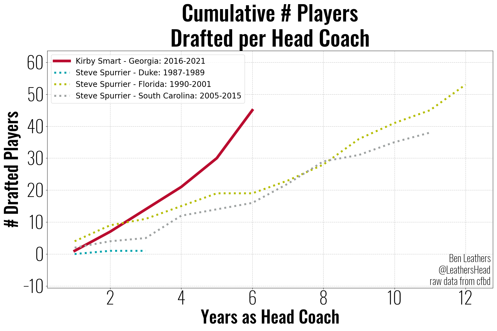

Kirby’s Draft Production
How well has UGA put players into the draft under Kirby?

Wow… could that “up and to the right” trajectory suggest that Kirby’s good at player development?
You might be thinking to yourself… “No, it just suggests he’s recruiting better players” which is a reasonable thing to think. Mark Richt is no question a DGD, and he elevated the program during his tenure. That being said, Kirby inherited a roster whose previous 3 recruiting classes had an average ranking of ~9th in the country, whereas Kirby has averaged rankings of ~3 as head coach of UGA. So you would be justified to argue that this upward trajectory just points to better recruiting. But is there more to the story?

Percent of recruits that get drafted.
It’s not just better players. Even the 3 stars are more likely to get drafted the longer they play under Kirby. That seems like some compelling evidence for the argument that Kirby is building a program for player development.
How do UGA’s Draft results during Kirby’s first 6 years compare to other coach’s first 6 years?

Seeing Jimbo Fisher at #5 was surprising to begin with, but then I remembered he’s got a reputation for recruiting and he’s developing a reputation for losing recruits now that the transfer portal is a factor. Mark Richt at #6 is less surprising, he was a great coach who did put a lot of talent into the NFL and was a great coach.
So how did Larry Coker and Jim Tressel out perform Kirby in the first 6 years?

Oh, they stepped into programs with loaded rosters that put 8 and 11 players into the NFL in year 1. Kirby didn’t inherit a completely bare roster, but it was certainly more modest.
Let’s check on some coaches that are noticibly absent from the top ten.

In fairness to Saban, Spurrier, and Meyer, they didn’t start their heach coaching careers at a blue blood football school, so lets compare the results from each school tenure.


How many UGA players will need to be drafted in order for Kirby to jump into first in year 7?

What Happened to Larry Coker?
He got fired from Miami after going 6-6 and didn’t coach again until 2012 when he was hired by UTSA.